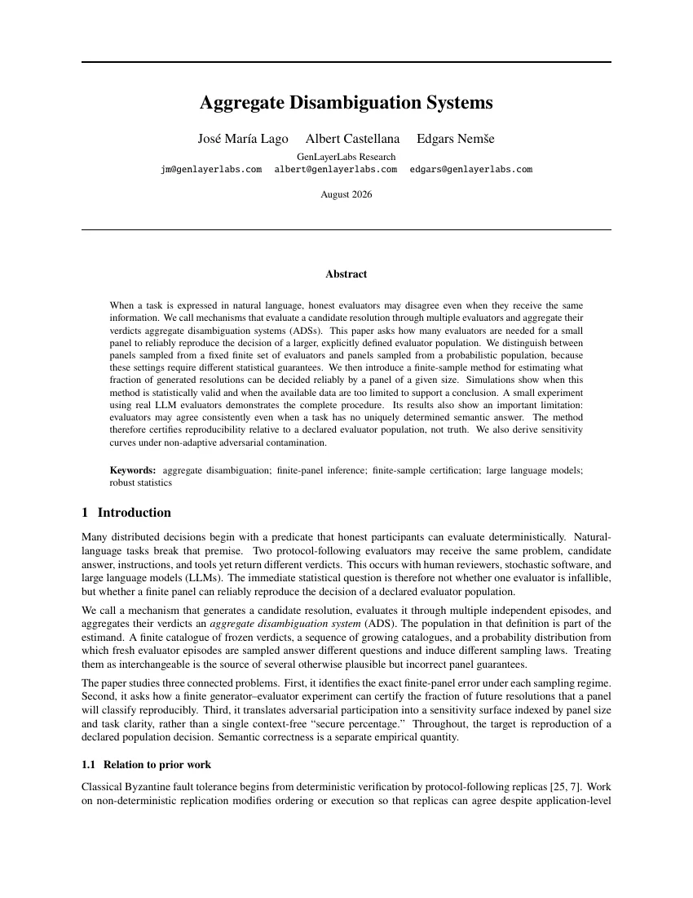

재현성통계로 보는 재현성어떤 결정은 자동화하기 쉽습니다.
명확한 규칙입금이 확인됐나요?
→
하나의 답예.
우리의 제안
GenLayer: 스스로 판단하는 블록체인.
GenLayer는 정답이 뚜렷하지 않은 질문에도 컨트랙트가 행동할 수 있는 네트워크입니다. 그 합의 메커니즘인 Optimistic Democracy는 세 박자로 움직입니다. 각자 선택한 AI 모델을 실행하는 검증자들이 결정을 판단하고, 미리 선언된 규칙이 이들의 표를 종합하며, 그 평결은 확정되기 전까지 누구나 이의를 제기할 수 있도록 열려 있습니다.
결정 하나가 처음부터 끝까지 가는 길.
재현성
평가자들의 의견이 갈리거나 일부가 속이려 들 때, 그 결정을 믿을 수 있을까요?
방금 하나의 결정이 이 기계를 통과하는 과정을 보셨습니다. 아래는 그런 시스템을 두고 무엇을 증명할 수 있는지 하나씩 짚어 가는 내용이고, 출발점은 평가자 그룹 자체입니다. 전체 평가자 집단이 한쪽으로 기울어 있다면, 그중에서 무작위로 뽑은 더 작은 그룹이 같은 결론에 도달할 확률은 얼마나 될까요? 그리고 집단의 일부가 적대적으로 움직일 때, 그 신뢰성은 어디까지 유지될까요?
핵심 기여이 논문은 유한한 평가자 그룹의 정확한 오류 확률을 제시하고, 재현성과 진실을 분명히 구분합니다.
‘예’ 응답 비율, 적대적 비율, 평가자 수를 바꿔 보세요.
그래도 그룹이 정직한 다수 결정을 재현할 확률—
논문의 비적응형 모델로 정확히 계산한 최악의 경우입니다. 모든 적대적 표가 정직한 다수의 반대쪽으로 움직입니다.
조금 더 알아보기
평가자 수를 늘리는 것이 왜 도움이 되나요?
전체 평가자 집단의 찬반이 어느 한쪽으로 기울어 있으면, 무작위로 뽑은 그룹이 그 결정을 놓칠 확률에는 논문이 보증하는 상한이 붙고, 그 상한은 그룹이 커질수록 0을 향해 줄어들기 때문입니다.
어떤 결정이 더 쉽게 판가름 나나요?
평가자들의 의견이 뚜렷하게 일치할수록, 안정적인 결과에 도달하는 데 필요한 평가자 수는 대체로 줄어듭니다.
재현성이 곧 진실을 뜻하나요?
아닙니다. 미리 정한 평가자 집단에서 무작위로 뽑은 여러 그룹이 같은 결론에 이를 가능성이 높다는 뜻입니다. 이 논문이 측정하는 것은 객관적 진실이 아니라 재현성입니다.
일부 평가자가 적대적이라면 어떻게 되나요?
평가자 집단 중 알려진 비율이 그룹을 뽑기 전에 이미 오염된 경우의 최악 오류를 논문이 정확히 계산합니다. 얼마나 버티는지를 미리 가정하는 대신, 이렇게 수치로 확인합니다.
합의
AI가 내놓은 두 답이 ‘같은 답’인지는 누가 정할까요?
Aggregate Disambiguation Systems에서는 예·아니요 표를 세었습니다. 이번에는 그 표가 어디서 나오는지 봅니다. 같은 질문을 AI에게 두 번 물으면 문장은 매번 달라지는데, 고전적 합의 알고리즘은 어떤 차이든 결함으로 간주합니다. GenLayer의 답이 동등성 원칙(Equivalence Principle)입니다. 컨트랙트가 호출 단위로 무엇을 ‘같은 답’으로 볼지 선언하면, 한 검증자가 초안을 제시하고 나머지는 그 기준에 따라 판단합니다.
백서에서컨트랙트는 호출 단위로, 리더의 출력이 받아들일 만한 답인지 검증자가 어떤 기준으로 판단할지 선언합니다. 필요하면 검증자 자신의 재실행 결과와 비교해 판단할 수도 있습니다.
기준을 바꿔 보세요. 표가 달라집니다.
1 컨트랙트가 ‘같은 답’의 기준을 선언합니다
llm_call( task = "제출된 보고서가 요구사항을 충족하는가?", equivalence = "자신의 재실행과 같은 평결", )
# 또는 이렇게 선언: · ·
2 리더가 실행하고 답을 제안합니다
“요구사항 충족. 가격과 경쟁사 분석은 탄탄하고, 규제 부분은 얇지만 포함되어 있음.”
3 다섯 검증자가 재실행하고 리더의 답에 투표합니다
조금 더 알아보기
실제 문법인가요?
예시용 문법입니다. 실제 GenVM 컨트랙트는 샌드박스 안에서 실행되는 Python 클래스입니다. 다만 모든 비결정적 연산에 호출 단위로 동등성 기준을 선언한다는 메커니즘 자체는 백서에 명시된 그대로입니다.
왜 두 검증자는 정직한 답을 거부하나요?
자신이 직접 재실행한 결과가 정직하게 반대 평결에 이르렀기 때문입니다. 판단이 어긋났을 뿐 부정행위가 아니므로, 사기로 처벌받는 일도 없습니다. Aggregate Disambiguation Systems의 확률 계산이 바로 이런 불일치를 흡수하도록 설계되어 있습니다.
기준은 누가 정하나요?
컨트랙트 개발자가 호출 단위로 정합니다. 같은 컨트랙트 안에서도 호출마다 다른 기준을 선언할 수 있습니다.
그냥 모든 검증자에게 정확히 같은 출력을 요구하면 안 되나요?
LLM 호출이나 웹 조회에는 유일한 정답 출력이 없기 때문입니다. 같은 기사를 옳게 요약해도 두 요약문의 문구는 서로 다릅니다. 컨트랙트의 결정적 부분은 지금도 정확히 일치하는지 검사하며, 선언된 동등성 기준은 비결정적 호출에만 적용됩니다.
조정
열한 명이면 충분한데 왜 천 명에게 물을까요?
평가는 모두 보수를 지불해야 하는 작업이므로, 평가자 수를 정하는 일은 곧 예산을 정하는 일입니다. 쉬운 결정, 걸린 돈이 적은 결정은 일찍 멈추면 됩니다. 더 어렵거나 중요한 결정이라면 추가 평가가 값을 할 수도 있는데, 그때도 현재 답변을 다시 확인할지 새 답변을 시도할지 갈림길이 남습니다.
핵심 기여이 논문은 어떤 다음 단계의 기대 총손실이 가장 작은지 계산합니다.
이 결정에는 평가자 몇 명을 쓰는 것이 적절할까요?
평가자 한 명당 한 건에 10센트가 듭니다. 평가자 그룹은 프로토콜이 정한 라운드 크기, 즉 5명부터 1537명까지로만 구성됩니다.
총비용 = 수수료 + 위험(라운드별). 검은 선이 가장 낮아지는 지점에서 멈추면 됩니다.
중단 규칙—
조금 더 알아보기
왜 적은 수의 평가자로 시작할 수 있나요?
많은 결정은 적은 비용으로 해결할 수 있기 때문입니다. 기대 편익이 추가 비용을 정당화할 때만 평가자를 늘려야 합니다.
언제 추가 평가가 가치 있나요?
오판 비용이 충분히 크거나 지금까지 모인 근거가 그만큼 약해서, 평가 비용을 한 번 더 치를 만할 때입니다.
왜 현재 답변을 다시 평가하는 것과 새 답변을 만드는 것을 구분하나요?
두 선택이 가져다주는 것이 다르기 때문입니다. 다시 평가하면 같은 답변에 대한 근거가 더 쌓이고, 새 답변을 만들면 평가 대상 자체가 바뀝니다. 논문은 다음 평가에 비용을 쓰기 전에 두 선택지를 각각의 비용과 견주어 봅니다.
실제 네트워크는 정말 이 이상적인 규칙을 따르나요?
이 논문이 그것까지 보여 주지는 않습니다. 이 규칙은 모든 것을 아는 계획자를 위한 기준선이고, 네트워크가 그 기준선과 일치하는 것은 알맞은 순간에 알맞은 평가 확대를 일으키는 일이 누군가에게 이득이 될 때뿐입니다. 실제 이의 제기 유인이 이 기준선과 맞아떨어지는지가 Multi-Agent Appeal Games가 다루는 질문입니다.
토크노믹스
노드를 무수히 띄워 네트워크를 장악하려는 시도를 무엇이 막을까요?
노드는 싸게 띄울 수 있어서 누구나 천 개라도 만들 수 있습니다. 그래서 표는 노드에서 나올 수 없습니다. GEN Tokenomics는 투표권을 공급량 상한이 정해진 자산인 GEN에 묶습니다. 모든 검증자는 잃을 수 있는 지분을 잠그고, 노드를 직접 운영하지 않는 보유자는 자기 지분을 실제로 노드를 운영하는 검증자에게 빌려줍니다. 이것이 위임 지분 증명입니다.
핵심 기여법정을 떠받치는 경제 엔진입니다. 공급량, 발행, 보상, 스테이킹, 페널티를 보안과 효용이 계속 맞물리도록 명시합니다.
같은 공격자, 스테이킹 관문이 있을 때와 없을 때.
표가 노드에서 나온다면
공격자 하나, 노드는 무한
노드는 공짜로 얼마든지 만들 수 있습니다…
희소 자산에 묶인 표
각 표는 상한이 정해진 공급량의 일부를 잠급니다
공급량에는 상한 — 신규 발행은 줄어들기만 합니다
공격자 보유량: 전체 GEN의 0% — 위험 노출, 슬래싱 가능
논문의 확정 파라미터 표 기준: 검증자 최소 자체 스테이킹 42,000 GEN, 최소 위임 42 GEN, 언본딩 7 에포크, 선발 가중치 √(0.6·자체 + 0.4·위임).
조금 더 알아보기
검증자에게 줄 돈은 어디에서 나오나요?
두 갈래입니다. 거래 수수료, 그리고 고정된 곡선을 따라 9%에서 4%를 향해 줄어드는 예정 발행입니다. 이 일정은 약속이 아니라 상한입니다. 소각은 이를 더 낮출 뿐이고, 공급량이 늘수록 실효 인플레이션은 내려갑니다. DAO는 수수료로만 재원을 마련하므로, 그 수입은 발행이 아니라 실제 사용량에 비례합니다.
검증자는 실제로 무엇 때문에 처벌받나요?
이 벌칙 체계는 정직한 모델 오류와 입증 가능한 부정행위를 구분합니다. 진 쪽에 투표하면 수수료 규모의 금액만 소각될 뿐, 스테이킹한 원금은 결코 잃지 않습니다. 태만에는 1% 슬래싱이, 입증 가능한 사기에는 리더에게 5% 슬래싱이 적용되며, 실패한 이의 제기의 예치금은 그 라운드에서 다수와 같은 쪽에 선 검증자들에게 넘어갑니다. 결국 무거운 대가는 부정행위에만 따릅니다.
제곱근 가중치만으로 시빌 공격이 막히나요?
아닙니다. 논문도 이를 분명히 밝힙니다. 오목한 가중치는 집중을 완화할 뿐이어서, 신원을 공짜로 만들 수 있다면 지분을 쪼개는 쪽이 총가중치를 높입니다. 하지만 신원은 공짜가 아닙니다. 신원마다 최소 기준인 42,000 GEN 전액을 잠그고, 자체 노드를 돌리고, 가동률 요건을 지키고, 각자 슬래싱 위험을 져야 합니다.
검증자를 직접 운영하지 않고도 보상을 받을 수 있나요?
네. 누구나 42 GEN 이상을 검증자 한 명 또는 여러 명에게 위임할 수 있고, 보상은 자동으로 복리로 쌓입니다. 검증자마다 수수료율을 따져 고를 필요도 없습니다. 배분 비율은 프로토콜이 고정하고, 같은 검증자 아래에서는 자체 스테이킹한 GEN이든 위임한 GEN이든 모두 같은 수익률로 보상을 받습니다.
GEN TOKENOMICS · 논문 공개 예정
유인
잘못된 결정에 이의를 제기하는 비용은 누가 낼까요?
앞서 본 3–2 표결을 기억하시나요? 그런 박빙의 결정이야말로 다시 들여다볼 가치가 있습니다. 이의 제기는 시스템의 결정을 개선할 수 있지만, 그 공적 이익만으로는 누군가가 비용을 치르고 이의를 제기하리라는 보장이 없습니다.
핵심 기여이 논문은 시스템에 유리한 선택과 참여자에게 유리한 선택을 나누어 보고, 어떤 조건에서 둘이 같아질 수 있는지 분석합니다.
어떤 의심이 행동으로 옮길 가치가 있는지는 보상이 정합니다.
누가 이의를 제기할 것인가—
조금 더 알아보기
무엇이 참여자를 이의 제기에 나서게 하나요?
참여자가 생각하는 성공 가능성, 보상, 잃을 수 있는 예치금, 이의 제기 비용, 그리고 결과에 걸린 본인의 이해관계가 영향을 줍니다.
유용한 이의 제기가 실제로 일어나도록 유인을 설계할 수 있나요?
특정 조건에서는 가능합니다. 시스템에 추가 평가가 득이 되는 시점과 참여자가 이의를 제기하려는 시점이 더 잘 맞도록 보상을 조정할 수 있음을 보여 줍니다.
잠재적 이의 제기자가 여러 명인 것이 왜 중요한가요?
이의를 제기할 수 있는 사람이 여럿이면 각자의 선택이 서로 맞물리기 때문입니다. 그래서 메커니즘은 서로 미루기, 경쟁, 겹치는 수고까지 감안해야 합니다.
무작정 낸 이의 제기를 막으려면 예치금을 그냥 올리면 되지 않나요?
예치금이 커지면 추가 패널의 비용을 대고 스팸도 막아 주는 것은 맞습니다. 다만 그 돈은 이의 제기가 판가름 날 때까지 묶여 있어야 합니다. 논문이 보여 주는 것은, 겉으로 드러나는 보상 계산은 그대로인데도 실제로 이의를 제기할 여력이 있는 사람의 폭이 급격히 좁아질 수 있다는 점입니다.
형식 검증
프로토콜은 정말 설계대로 작동할까요?
Layered Formal Verification은 기계로 검사되는 Optimistic Democracy 모델을 실제 배포된 컨트랙트에 묶어 두고, 코드가 바뀔 때마다 다시 검사합니다. 253개 커밋이 쌓이는 동안 이 방식은 처리 순서에 따라 갈라지는 동작 하나와 소리 없이 깨진 불변식 세 개를 잡아냈고, 모두 개발팀에 보고되었습니다.
조금 더 알아보기
이 검증은 실제로 무엇을 다루나요?
계층형 모델의 명시적인 속성들입니다. 표준 상태 그래프, 그 그래프와 대조해 검사한 TLA+ 명세, 그리고 모든 전이를 특정 리비전의 Solidity 코드 경로에 대응시키는 매핑입니다.
이것으로 코드에 버그가 없다는 것이 증명되나요?
아닙니다. 특정 리비전의 명시된 모델에 대해 명시된 속성만 증명합니다. 이렇게 범위를 한정하기 때문에 주장을 검사하고, 또다시 검사할 수 있는 것입니다.
왜 한 번 증명하고 끝내지 않고 다시 검증하나요?
프로토콜이 계속 진화하기 때문입니다. 명세는 의미 수준의 회귀 테스트 장치로 작동합니다. 새 리비전이 나올 때마다 같은 속성과 대조해 다시 검사하므로, 소리 없는 변질이 운영 사고가 아니라 실패한 검사로 먼저 드러납니다.
이 회귀 테스트 장치가 실제 문제를 잡아낸 적이 있나요?
네, 있습니다. 4개월 동안 253개 커밋이 쌓인 뒤의 재검증에서 같은 이의 제기 이벤트를 처리하는 두 코드 경로 사이의 경쟁 상태가 드러났고, 모델 체킹으로는 핫픽스 하나가 소리 없이 깨뜨린 프로토콜 불변식 세 개를 찾아냈습니다. 모든 발견은 실제 구현에서 확인된 뒤 개발팀에 보고되었습니다.
핵심 연구
다섯 가지 질문, 다섯 편의 논문.
이 페이지가 질문을 던진 순서 그대로입니다. 평가자 그룹을 측정하고, 평가 확대의 비용을 계산하고, 법정의 재원을 마련하고, 이의 제기의 유인을 맞추고, 코드를 검증합니다.